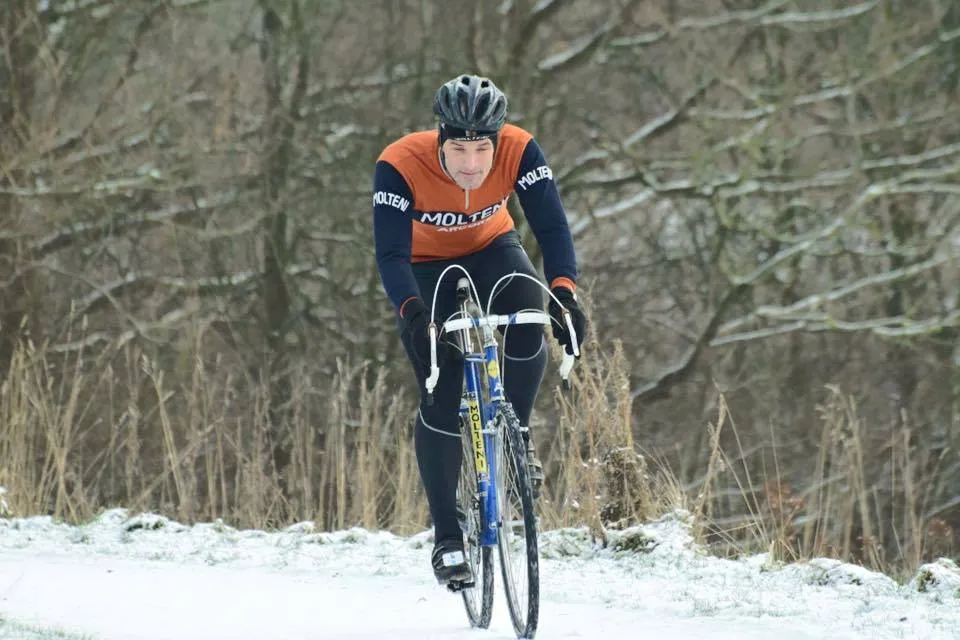

Marienlund Cykelcross: Storslalom på kælkebakke

Squadra Molteni havde i dag Grane Maaløe til startved Marienlund Cykelcross.
Det var dejligt koldt og mange steder spejlglat. Ellers bød på Marienlund Cykelcross på en god rundstrækning med 2 km. kuperet og meget afvekslende terræn, der bl.a. bød på kørsel på børnenes kælkebakke. Bakken skulle køres i tre sektioner ned, på tværs og helt ned, storslalom på cykel, god spas.

Løbet var for Squadra Molteni en lidt forsigtig affære på det glatte underlag, men det blev til en hæderlig 16. plads i et felt af herrer fra alle klasser